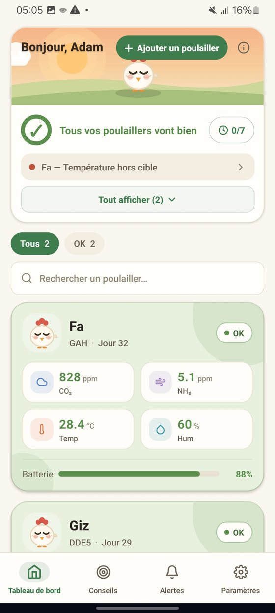

For poultry farmers
Filaha Flock watches the air in your poultry house day and night. A sealed box fixed to the wall measures temperature, humidity, carbon dioxide (CO2) and ammonia (NH3), and keeps an eye on the mains power. When something becomes dangerous it does not wait for you to open an app: it sounds a buzzer in the house, sends you an SMS and rings your phone.
It does this over the mobile network, so it works with no internet on the farm, and it keeps working through a power cut on its own battery.
Filaha Flock watches and warns; you decide and act. Fans, heaters and feeders stay under your control, and your veterinarian and good ventilation remain your best allies.
Birds need different conditions as they grow: a day-old chick needs about 33 °C, a six-week-old bird about 20 °C. Filaha Flock follows this in two parts that work together.
Targets shown in the app for broilers
| Day | Temperature | Humidity |
|---|---|---|
| 1 | 33 °C | 65 % |
| 7 | 30 °C | 62 % |
| 14 | 28 °C | 60 % |
| 21 | 26 °C | 60 % |
| 28 | 23 °C | 58 % |
| 42 and after | 20 °C | 58 % |
The app fills in the days between; layers, turkeys and local breeds have their own schedules. These are guidance targets from the main breeders' guides and technical sources, not alarm limits.
If your flock's arrival date or breed is wrong, correct it in the app or tell us: everything above depends on it.
About every 15 seconds the box takes its readings and sends them to our servers. A warning is raised only when a value stays in the danger zone for two readings in a row, about 30 seconds, so one stray spike never wakes you. Warnings are spaced at least 10 minutes apart.
| Measurement | Standard limit: warns when | Why it matters |
|---|---|---|
| Temperature | 38 °C or above, or 12 °C or below | Heat stress and chilling hit the flock within hours. |
| Humidity | 85 % or above, or 25 % or below | Wet litter breeds disease; dry air raises dust. |
| CO2 | 2,500 ppm or above | Ventilation is no longer keeping up with the birds. |
| Ammonia (NH3) | 35 ppm or above | It burns the airways long before you can smell it. |
| Mains power | The power is cut | The house is running on the box's battery. |
These are the standard limits the box starts with. Change them by text message to suit your flock's age: see the next page.
If the mobile network is down at that moment, the message waits and is retried for about 15 minutes until it goes through.
Text the box's SIM number from your registered phone. The box replies with what it saved. Change the limits as often as you like; they survive power cuts.
| Send (example) | It sets |
|---|---|
| T 20 32 | Temperature: warns below 20 °C or above 32 °C |
| H 40 75 | Humidity: warns below 40 % or above 75 % |
| C 2500 | CO2: warns at 2,500 ppm or above |
| N 25 | Ammonia (NH3): warns at 25 ppm or above |
| LIMITS | The box replies with the limits it is using now |
| RESET | Back to the standard limits |
You can combine them in one message: T 20 32 H 40 75 C 2500 N 25. Capitals, spaces and commas do not matter. Write with Latin letters and digits, and use a dot for decimals (32.5).
The box answers, for example: Filaha DEV01 OK: T20-32 H40-75 C2500 N25. Always check the reply: if something in your message is wrong, nothing is changed and the reply says what to fix.
Values outside these ranges are refused, so a typing slip cannot switch an alarm off. Only your registered phone number is obeyed; texts from any other number are ignored.
When to change them: when your flock reaches a new stage. Check today's target temperature in the app, then set the low and high limits a few degrees either side of it. If you are unsure which numbers to use, ask us.
You get the same buzzer, SMS and call, and the box carries on measuring from its battery. When the mains returns you receive a confirmation SMS, roughly a minute later on purpose, so that it is never sent by mistake.
Every evening at 8 pm the box sends one SMS with the latest readings.
The box keeps measuring and stores readings for about 15 minutes, sending them when the link returns. If our servers stay silent for about 30 minutes it restarts itself. Your SMS and call alerts do not depend on the app or on internet.
The screen on the box shows the current readings, so you can check the house without taking out your phone.
| Button | What it does |
|---|---|
| Red — Test | Sends a test SMS to your phone. Press it once a month to confirm the whole path works. |
| Blue — Mute | Silences the buzzer for 10 minutes. |
| White — Power | Hold for 3 seconds to switch the box off (you receive a shutdown SMS). Press once to wake it. |
| Green — Reset | Restarts the box. |
One short chirp when the box starts. Two chirps when it has connected to our servers.
Each house appears as a live card on your phone, with current readings, history and reports. The plan you choose decides how many houses you can watch and which reports you get: Basic gives live monitoring, emergency call and SMS, and a daily report; Premium adds weekly and monthly reports, several houses and priority support.

| What you see | What to do |
|---|---|
| The screen is off | Check the socket and the power cable. If the box is on its battery you will have received a power-cut SMS. |
| No data in the app | Wait a few minutes: the box reconnects on its own. Check the antenna is attached and the SIM plan is active. If it stays silent, call us. |
| No SMS when you press the red button | Check the alert number on your record, your phone's signal and the SIM plan, then call us. |
| The buzzer will not stop | It stops when the reading returns to normal. The blue button silences it for 10 minutes. |
| An alert you think was false | Note the time and the value, and call us. We can look at the readings from that moment. |
To be filled in at installation. Keep this page with the guide.